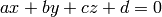
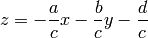
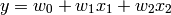
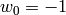
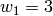
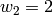

Mapping of a Plane¶
In this tutorial, we will use a very simple linear neuron to map a plane. The general equation of a plane is given below:

We can put the z variable as a function of x and y, so we get:

It is easy to see that this is exactly the response of a single neuron with two inputs, bias and a linear activation function. If that is the case, the response of a neuron will be given by (notice that the y variable here is not the same s in the previous equation):

where  and
and  are the inputs to the neuron.
are the inputs to the neuron.
So, we can use a neuron to map a plane. The reason to use a neuron instead of using simple calculations to find the values of the coefficients is that input data may be noisy, but a neuron has the ability to supress noise, given the statistical nature of its learning.
We will assume that we are in the Python command line, and that both numpy and peach were imported. To create a neuron as described above, we issue the command:
>>> nn = FeedForward((2, 1), lrule=LMS(0.02), bias=True)
This will create a FeedForward with only one layer, with 2 inputs and 1 neuron in it. The default activation function is Linear, so we don’t need to inform that in the creation of the instance. We use the LMS learning rule, setting the learning rate to 0.02 – but notice that we must, here, specify the argument name, since it is not in its correct position. Last, we set the bias property as True.
Now we need to create the training set to present to the network. Although there are ways to present a complete training set to the network, we will use the same feed method of the previous tutorial. We do this so we can track the convergence of the synaptic weights (we won’t show the code to do that, but it is very easy to adapt it):
>>> error = 1
>>> while abs(error) > 1e-7:
... x1 = random.uniform(-10, 10)
... x2 = random.uniform(-10, 10)
... x = array([ x1, x2 ])
... y = -1 - 3*x1 + 2*x2
... error = nn.feed(x, y)
We create a loop to generate random points in the plane and calculate the respective value of the mapped function. We don’t add noise here, since the objective of this tutorial is only to show how to work with the neuron. Notice that the loop is repeated until the error, returned by the feed method, is lower than a fixed value.
At the end of the loop, we can inspect what we got as synaptic weights. Notice that, given the equation in the code, we expect ,  and . What we get is:
>>> nn[0].weights
array([[-1.00000409, 2.99999864, 2.00000068]])
which is pretty close to what we expect. Notice that there is some error. This can’t be avoided when dealing with stochastic algorithms (such as learning algorithms for neural networks).
If we use the matplotlib module, we can plot the convergence of the error and synaptic weights of the neuron. We get something like the figure below: